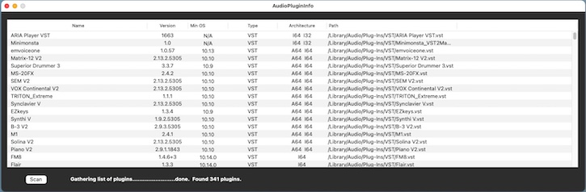

AudioPluginInfo Help |
Usage

Open AudioPluginInfo, press the Scan button, then wait for the list to be populated. Installed plugins are initially displayed in alphabetical order by name. Clicking on any column header will allow sorting by the contents of the selected column.
Selecting one or more rows will display the count of the number of plugins selected.
Minimum OS:
| 15.x | Sequoia | |
| 14.x | Sonoma | |
| 13.x | Ventura | |
| 12.x | Monterey | |
| 11.x | Big Sur | |
| 10.15.x | Catalina | |
| 10.14.x | Mojave | |
| 10.13.x | High Sierra | |
| N/A | The plugin does not report a minimum version |
Possible architectures:
| A64 | ARM 64-bit (Apple M1, M2, M3, M4, etc.) | |
| I64 | Intel 64-bit | |
| I32 | Intel 32-bit | |
| PPC | PowerPC | |
| N/A | Not available (cannot determine, etc.) |